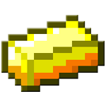
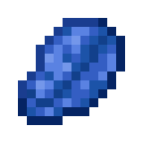

это сайт с майнкрафт крафтами и их использованеием
Ресурсы
алмаз

Алмаз (англ. Diamond) — это материал, добываемый из алмазной руды или глубинной алмазной руды.
крафты:Любая пиротехническая звезда Можно добавить до восьми красителей. Можно добавить одну голову, кусочек золота, перо или огненный шар. И алмаз, и светокаменная пыль могут быть добавлены с любым ингредиентом. Алмаз + Обсидиан + Книга Стол зачаровывания Любые доски + Алмаз Проигрыватель Палка + Алмаз Алмазный топор Алмаз Алмазный шлем Алмаз Алмазная кираса Алмаз Алмазные поножи Алмаз Алмазные ботинки Алмаз + Палка Алмазный меч Алмаз + Палка Алмазная лопата Палка + Алмаз Алмазная мотыга Алмаз Алмазный блок Алмаз + Палка Алмазная кирка
незерит

Незерит (англ. Netherite) — это редкий материал Нижнего мира, предметы из которого сильнее алмазных и не могут сгореть в огне или лаве.
крафты:Незеритовый блок Магнетит Незеритовый меч Незеритовый топор Незеритовая мотыга Незеритовая кирка Незеритовая лопата Незеритовый шлем Незеритовая кираса Незеритовые поножи Незеритовые ботинки
железо

Железный слиток (англ. Iron Ingot) — слиток универсального металла, широко используемый в крафте.
Железная дверь Натяжной датчик + Палка + Железный слиток + Нить Арбалет Любые доски + Железный слиток Щит Любые доски + Железный слиток Кузнечный стол Железный слиток + Красная пыль + Каменная нажимная пластина 6 Нажимные рельсы Железный слиток Ножницы Железный слиток 16 Железная решётка Железный слиток + Палка + Любые доски 2 Натяжной датчик Железный слиток + Железный блок Наковальня Железный слиток + Сундук Загрузочная воронка Железный слиток + Палка + Красный факел 6 Активирующие рельсы Камень + Железный слиток Камнерез Камнерез Камень не заменяем.[только для Java Edition] Железный слиток + Камень, вариации Андезита, Гранита и Диорита. Камнерез Камнерез Камень, диорит, андезит и гранит взаимозаменяемы.[только для Bedrock Edition] Кусочек железа + Железный слиток Цепь Железный слиток Железный люк Железный слиток Котёл Железный слиток Вагонетка Палка + Дубовые доски или Булыжник или Дроблёный сланец или Железный слиток или Золотой слиток или Алмаз Деревянный топор или Каменный топор или Железный топор или Золотой топор или Алмазный топор Железный слиток Ведро Железный слиток + Палка 16 Рельсы железный шлем железная кираса железные поножи железные ботинки Огниво Железный слиток Железный блок железный меч железная лопата железная мотыга железная кирка железный топор Утяжелённая нажимная пластина (тяжёлая) Железный слиток 9 Кусочек железа Железный слиток + Красная пыль Компас Булыжник + Красная пыль + Любые доски + Железный слиток Поршень Железный слиток + Гладкий камень + Печь Плавильная печь
золото
Золотой слиток (англ. Gold Ingot) — материал, получаемый обжигом необработанного золота или любой золотой руды.
Золотой блок 9 Кусочек золота Золотой слиток 9 Кусочек золота Золотой слиток + Красная пыль + Палка 6 Электрические рельсы Золотой слиток Золотой блок Палка + Золотой слиток Золотой топор Золотой слиток Золотой шлем Золотой слиток Золотая кираса Золотой слиток Золотые поножи Золотой слиток Золотые ботинки Золотой слиток + Палка Золотой меч Золотой слиток + Палка Золотая лопата Палка + Золотой слиток Золотая мотыга Золотой слиток Утяжелённая нажимная пластина (лёгкая) Золотой слиток + Яблоко Золотое яблоко Золотой слиток + Палка Золотая кирка Незеритовый скрап + Золотой слиток Незеритовый слиток Золотой слиток + Красная пыль Часы
лазурит
Лазурит (англ. Lapis Lazuli) — предмет, входящий в состав синего красителя и используемый для зачаровывания.
Лазуритовый блок Ингредиенты Процесс Лазуритовая руда Лазурит + Костная мука + Красный краситель 4 Сиреневый краситель Розовый краситель + Красный краситель + Лазурит 3 Сиреневый краситель Лазурит Лазуритовый блок Лазурит Синий краситель Лазурит + Зелёный краситель Бирюзовый краситель Лазурит Синий краситель Лазурит или Костная мука или Белый краситель Светло-синий краситель [только для BE и EE]
кожа

Кожа (англ. Leather) — материал, выпадающий с некоторых мобов. Несмотря на простоту добычи, имеет высокую ценность для развитых игроков.
Кроличья шкурка Палка + Кожа Рамка Кожа Кожаная конская броня Бумага + Кожа Книга Кожа Кожаный шлем Кожа Кожаная кираса Кожа Кожаные поножи Кожа Кожаные ботинки
сорри за качество кожы
изумруд

Изумруд (англ. Emerald) — материал, добываемый из изумрудной руды и используемый для торговли с деревенскими жителями и странствующими торговцами.
| Тип |
Материалы |
|---|---|
| Редкость |
Обычный |
| Возобновляемый |
Да |
| Складываемый |
Да (64) |
| Первое появление |
См. Историю |
| Номер |
dec: 388 hex: 184 bin: 110000100 |
| Текстовый идентификатор |
emerald |
Рецепты крафта — это схемы создания предметов и блоков в инвентаре (клавиша «E») или в верстаке. В инвентаре игрок может создать только простые предметы, такие как доски, палки и верстак, более сложные предметы и блоки создаются в верстаке. На этой странице полный список рецептов предметов, существующих в данный момент в самой новой версии игры (снапшоте). В первой ячейке показано название предмета и рецепт, во второй — предметы, нужные для крафта, а в третьей — краткое описание создаваемого предмета. Предметы и блоки в таблице можно искать через поиск, введя часть названия, поиск также ищет по ингредиентам и описанию.

железо:железный меч,
оригинальный сайт